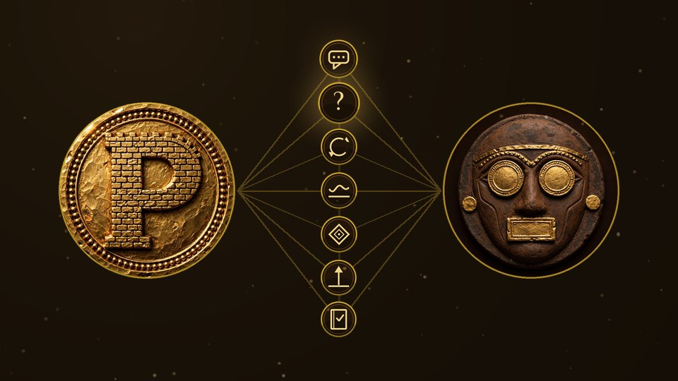

Services / proposed offer
The Mint
A pilot for a deliberate beginning.
proposed · scope and availability confirmed before booking



The film was made from the town's own anchored coin faces (Google Flow, from the start and end frames), and the stills are its frames. The layers it opens into are the stages of the service, named in the scroll presentation below.
Scroll — watch a coin get made
The Mint · How a coin is made hereThe Coin, WholeOne coin, launched by its own founder — and written into the town's public record. Scroll, and watch it open.
Stage 1 · What it isThe ConversationWhat it does: your idea, in your own words — what the coin is, why it should exist, who it is for.
Stage 2 · What it isThe Honest QuestionWhat it does: asks, before anything is built — should this be a coin? A no is the service working.
Stage 3 · What it isThe RehearsalWhat it does: a guided practice run first — name, image, permissions, costs, custody. No seed phrase is ever collected.
Stage 4 · What it isThe CovenantWhat it does: your house's commitments, read in full and signed. A signature qualifies — not a purchase.
Stage 5 · What it isThe MarkWhat it does: prepares your coin's image and places the family mint mark on it.
Stage 6 · What it isThe LaunchWhat it does: your own wallet creates, signs and pays at every step. We never hold keys or funds.
Stage 7 · What it isThe RecordWhat it does: enters your house in the town registry with its birth facts, receipted in the Day-Book.
Stage 8 · What it isThe HandoverWhat it does: issues your House Passport, with thirty days of support — then you run your house unaided.
The MintEvery Layer, NamedThat is the whole mechanism: one coin, one founder, one record — nothing hidden between the layers.
The proposal
About this service
The Mint is a bounded starting point for founders who need to turn an initial token-launch idea into a usable brief. The proposed engagement brings the intended audience, supplied material and immediate launch needs into one conversation, then separates agreed work from unresolved dependencies. It is a pilot, not a token-sale promise or a route to a guaranteed market outcome.
The points below describe proposed scope to be agreed, not completed work. Before booking, the brief must identify the source material, agreed outputs, exclusions and acceptance process. Supplied price ranges are scope-dependent; no schedule or ongoing support is implied.
Agreed before booking
What’s inside
Proposed deliverables, not a record of completed work.
- Clarify the launch purpose — proposed scope item
- Review founder-supplied material — proposed scope item
- Outline the intended audience — proposed scope item
- Prepare an agreed asset checklist — proposed scope item
Boundaries & prerequisites
No promise of listing, liquidity, market demand or investment outcome.
All paid work is PROVADIA-only. The proposed ruling is 80% founder / 20% website & community, separate from gold fees. Any gold fees, source rights, operational work and acceptance terms require explicit agreement. No wallet connection or live backend is provided here.